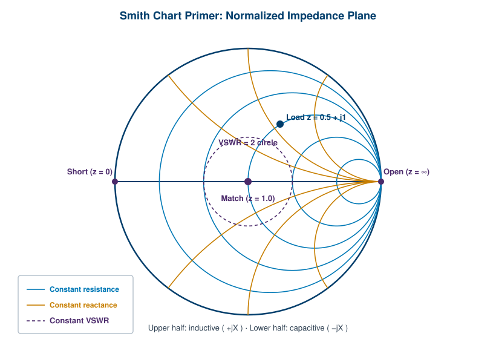

The Smith chart looks intimidating the first time you see it: a circle packed with arcs and loops that seem to follow no obvious logic. It is actually one of the most efficient tools in RF, a graphical calculator that turns the messy algebra of complex impedance and reflection into a few moves on a map. This appendix explains how to read it and walks through a matching problem from start to finish. Chapter 6 introduced the chart in the context of vector network analysis. Here we slow down and treat it on its own terms.
The Smith chart is a plot of the reflection coefficient (Gamma) drawn so that normalized impedance becomes easy to read. Normalized means every impedance is divided by the system impedance, almost always 50 ohms. A load of 50 ohms becomes z = 1, a load of 25 ohms becomes z = 0.5, and a load of 100 + j50 ohms becomes z = 2 + j1. Working in normalized terms means the same chart serves any system impedance.
The outer boundary of the chart is the circle where the reflection magnitude equals 1, that is, total reflection. Three landmarks orient everything else. The far left point is a short circuit (z = 0). The far right point is an open circuit (z = infinity). The exact center is the perfect match (z = 1), where the reflection coefficient is zero. Read the chart and you read the impedance. Read the distance from center and you read the size of the reflection, which is the same information as VSWR and return loss.

Every point on the chart sits at the crossing of two curves, one from each family.
The first family is the constant resistance circles, drawn here in blue. Each circle gathers all the impedances that share the same normalized resistance (the real part). They all pass through the open-circuit point on the right. The r = 1 circle passes through the center, because z = 1 is a match. Larger resistance values make smaller circles bunched toward the right; smaller resistance values make larger circles. The r = 0 circle is the outer rim itself.
The second family is the constant reactance arcs, drawn here in amber. Each arc gathers all the impedances that share the same normalized reactance (the imaginary part). The arcs in the upper half are positive, meaning inductive (+jX). The arcs in the lower half are negative, meaning capacitive (-jX). The horizontal centerline is the zero-reactance line, where impedances are purely resistive. An arc for x = +1 and an arc for x = -1 are mirror images across that centerline.
To plot an impedance you find its resistance circle, find its reactance arc, and mark where they cross. The example point in the figure, z = 0.5 + j1, sits where the r = 0.5 circle meets the x = +1 arc in the upper (inductive) half.
Distance from the center carries its own meaning. The center is a perfect match with zero reflection. The rim is total reflection. Any point's distance from the center, as a fraction of the full radius, equals the reflection coefficient magnitude |Gamma|.
That gives a clean graphical read of VSWR. Draw a circle centered on the chart center that passes through your impedance point. Every point on that circle has the same |Gamma|, and therefore the same VSWR, so it is called a constant VSWR circle (the dashed purple circle in the figure). Where that circle crosses the right half of the horizontal axis, you can read the VSWR value directly on the resistance scale. A point sitting on the r = 2 crossing of its VSWR circle corresponds to VSWR = 2. The closer your point is to center, the smaller the circle, and the better the match.
A network analyzer will compute Gamma, VSWR, and return loss for you, so why learn the chart by hand? Because the chart shows you what to do next. Series and shunt components move an impedance along predictable paths, and those paths are obvious on the chart and invisible in a table of numbers.
The rules are short. Adding a series inductor moves the point clockwise along its constant resistance circle (reactance goes more positive). Adding a series capacitor moves it counterclockwise (reactance goes more negative). Shunt components are easier to see on the admittance version of the chart, where adding a shunt capacitor moves the point clockwise and a shunt inductor moves it counterclockwise. The goal of every matching problem is the same: reach the center.
Suppose a network analyzer measures a load and, after normalizing to 50 ohms, reports z = 0.5 + j1, the point marked in the figure. This load is mismatched. Its real part is low and it has a strong inductive reactance, so it sits up and to the left of center. The job is to move it to the center with a simple L network of two reactive components.
Step one: cancel or rework the reactance to land on a circle that passes through the center. The r = 1 constant resistance circle and the g = 1 constant conductance circle both pass through the center, so reaching one of them is the route home.
Step two: add a shunt element to slide the point onto the g = 1 admittance circle. On the admittance view, this moves the point along a constant conductance arc until it intersects the unit conductance circle.
Step three: add a series element to travel along that circle to the center, cancelling the remaining reactance. When the point lands on the center, z = 1, the load is matched, the reflection coefficient is zero, and VSWR is 1.
The exact component values come from reading the reactance and susceptance changes between the points, then converting normalized values back to ohms and into inductors and capacitors at the design frequency. The chart does not replace that arithmetic. What it gives you is the strategy: which kind of component, in which position, and in which direction to move. That is the part that is hard to see any other way, and it is why the Smith chart has survived a century of calculators and software.
[1] Smith, P. H., "Transmission Line Calculator," Electronics, 1939, the original publication of the chart. Verify citation before publication.
[2] Pozar, D. M., Microwave Engineering, for the Smith chart construction and matching procedures. Verify edition and page references before publication.
[3] IEEE Std 100, The Authoritative Dictionary of IEEE Standards Terms, for reflection coefficient and impedance definitions. Verify current edition before publication.